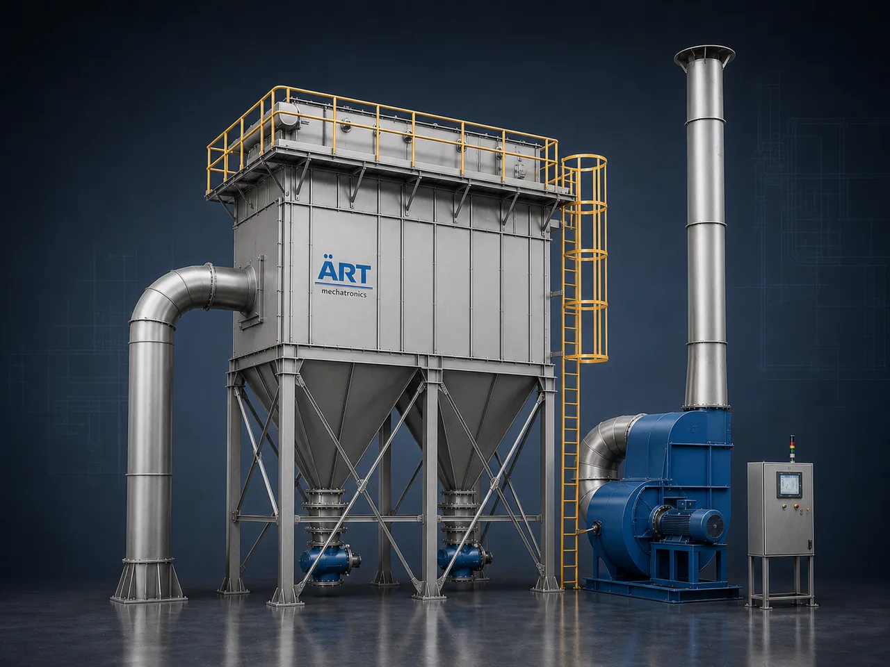

Industrial Dust Collector Machine & Dust Collection System (Air Pollution Control Equipment)
A Dust Collector Machine is an essential industrial pollution control system designed to remove dust, fumes, and airborne particles generated during manufacturing processes. It ensures clean air, worker safety, and compliance with environmental regulations.

About the Dust Collector Machine
Dust collectors are widely used in industries such as food processing, spices, pharmaceuticals, cement, steel, chemical, plastic, and packaging, where dust generation is unavoidable.
ART Mechatronics manufactures and supplies high-performance industrial dust collection systems, engineered for maximum filtration efficiency, low maintenance, and long-term reliability.
One machine, many names
Buyers search for this equipment under many terms — we manufacture all of them:
Working Principle of Dust Collector Machine
Dust is generated from processes like:
Dust is captured using:
Prevents dust from spreading into environment
Dust-laden air is transported through:
Dust particles are separated using:
Collected dust is stored in:
Filtered air is released back into environment safely.
Ensures pollution control compliance
Types of Dust Collector Machines
Industries Using Dust Collectors
🍃 Food & Agro Industries
- Spices, flour mills, rice mills
- Snacks, coffee, tea, pulses
💊 Pharma & Nutraceutical
- Powder handling
- Tablet manufacturing
🏭 Heavy Industries
- Steel, iron, aluminum
- Foundries & casting
🏗️ Construction & Minerals
- Cement, RMC, sand
- Marble, granite, tiles
⚗️ Chemical & Industrial
- Chemicals, detergents
- Paint, pigment, powder coating
♻️ Recycling & Plastic
- Plastic recycling plants
- Granules & pellets
Features & Advantages
- High dust filtration efficiency (up to 99%)
- Improved air quality & worker safety
- Compliance with pollution control norms
- Low maintenance design
- Energy-efficient operation
- Heavy-duty industrial construction
- Customizable design for all industries
Technical Highlights
- Airflow Capacity: Custom (CFM based)
- Filtration Type: Bag / Cartridge
- Dust Removal: Pulse Jet / Manual
- Construction: Mild Steel / Stainless Steel
- Automation: PLC-based control (optional)
Turnkey Dust Collection Solutions
ART Mechatronics offers:
- Complete dust collection system design
- Ducting layout engineering
- Equipment manufacturing
- Installation & commissioning
- After-sales service & AMC
Why Choose Art Mechatronics
- Industry-leading dust control expertise
- Customized solutions for every application
- High-efficiency filtration systems
- Durable and robust design
- Proven performance across industries
Applications
- Industrial Manufacturing Plants
- Food Processing Units
- Chemical & Pharma Plants
- Steel & Foundry Units
- Construction Material Plants
Industries that use the Dust Collector Machine
Get pricing & specs for the Dust Collector Machine
Share the product, target capacity, current process and plant location. These details help our engineers discuss the right machine or line configuration.
One partner, from design to start-up
ART Mechatronics designs, manufactures, installs and commissions your Dust Collector Machine solution with regional presence in India, UAE and Thailand.